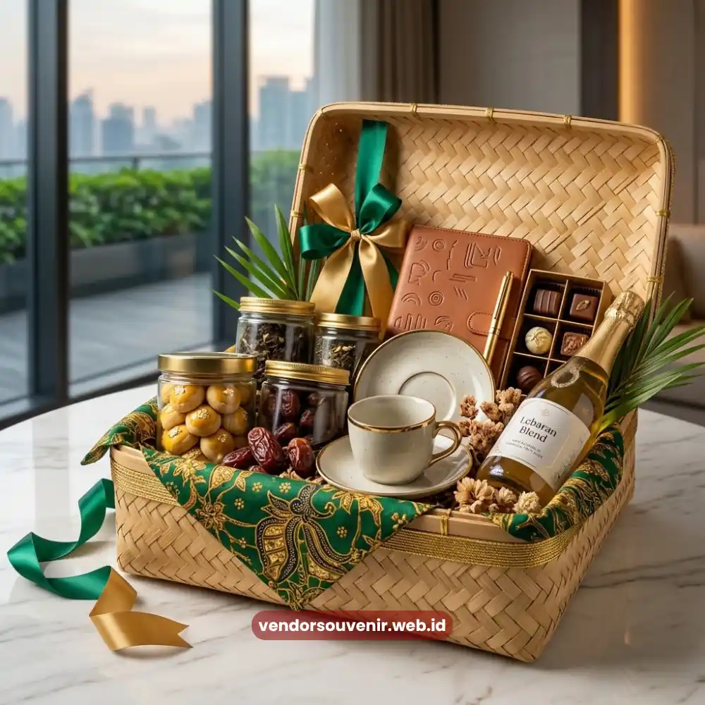

Daftar Isi
Hampers Lebaran perusahaan adalah paket hadiah bertema hari raya yang dikirimkan perusahaan kepada klien, mitra, atau karyawan sebagai bentuk apresiasi sekaligus penguat hubungan bisnis jangka panjang.
Momen Lebaran menjadi salah satu titik strategis dalam kalender bisnis karena secara emosional mendekatkan perusahaan dengan relasinya melalui nuansa kehangatan dan kebersamaan.
Pemberian hampers pada momen ini bukan sekadar tradisi tahunan, melainkan bagian dari strategi menjaga loyalitas relasi bisnis dalam jangka panjang.
Ringkasan Inti
- Momen Lebaran memberi ruang emosional yang kuat untuk memperkuat relasi bisnis melalui hampers.
- Tema hampers Lebaran perlu menyeimbangkan nuansa perayaan dengan identitas profesional perusahaan.
- Waktu pengiriman menjadi faktor krusial agar dampak hampers terasa maksimal.
- Isi hampers yang relevan dengan suasana hari raya meningkatkan kesan personal di mata penerima.
Mengapa Momen Lebaran Penting bagi Strategi Corporate Gifting?
Momen Lebaran penting bagi strategi corporate gifting karena menghadirkan konteks emosional yang jarang ditemukan pada momen bisnis lainnya sepanjang tahun.
Suasana hari raya membuat komunikasi antara perusahaan dan relasinya terasa lebih personal, sehingga pesan apresiasi yang disampaikan lewat hampers lebih mudah diterima secara tulus.
Selain aspek emosional, Lebaran juga menjadi momentum refleksi kerja sama selama satu tahun terakhir.
Banyak perusahaan memanfaatkan momen ini untuk menyampaikan rasa terima kasih atas kepercayaan klien maupun kontribusi mitra bisnis, sekaligus membuka ruang komunikasi positif untuk kerja sama di tahun berikutnya.
Bagaimana Menyusun Nuansa Hampers Lebaran yang Tetap Profesional?
Hampers Lebaran yang tetap profesional dapat disusun dengan memadukan elemen khas hari raya, seperti warna dan motif bernuansa lebaran, dengan identitas visual brand perusahaan secara proporsional.
Keseimbangan ini penting agar hampers tidak terkesan terlalu kasual, namun tetap merepresentasikan kehangatan momen Lebaran.

Parsel Korporat Lebaran
Pemilihan warna kemasan yang selaras dengan identitas brand, penggunaan kartu ucapan dengan bahasa yang hangat namun tetap formal, serta kurasi isi yang relevan dengan suasana perayaan akan membantu perusahaan menyampaikan pesan yang konsisten.
Sentuhan detail semacam ini sering kali menjadi pembeda antara hampers yang berkesan dan hampers yang mudah dilupakan.
Apa yang Membuat Hampers Lebaran Berkesan bagi Klien dan Mitra Bisnis?
Hampers Lebaran akan lebih berkesan apabila isinya relevan dengan momen perayaan sekaligus mencerminkan perhatian perusahaan terhadap kebutuhan penerima.
Produk yang identik dengan suasana Lebaran, dipadukan dengan sentuhan personal seperti kartu ucapan bernada tulus, cenderung meninggalkan kesan lebih mendalam dibandingkan hampers standar tanpa tema khusus.
Selain isi, momen penyampaian juga menentukan kesan yang diterima. Pengiriman yang tepat waktu, tidak terlalu mepet dengan hari raya maupun terlalu jauh sebelumnya, membuat penerima merasakan momentumnya secara utuh.
Hal ini memperkuat persepsi bahwa perusahaan benar-benar memperhatikan detail dalam menjaga hubungan bisnis.
Bagaimana Hampers Lebaran Berperan dalam Menjaga Loyalitas Bisnis Jangka Panjang?
Hampers Lebaran berperan sebagai pengingat halus atas hubungan baik yang telah terjalin sekaligus investasi emosional untuk keberlanjutan kerja sama di masa depan.
Ketika sebuah perusahaan secara konsisten hadir dalam momen penting relasinya, klien maupun mitra bisnis cenderung merasa dihargai secara personal, bukan sekadar diperlakukan sebagai transaksi bisnis semata.

Solusi Gift Set dari Vendor Terpercaya
Konsistensi ini pada akhirnya membangun loyalitas yang lebih kuat, karena relasi bisnis merasa menjadi bagian dari perjalanan perusahaan, bukan hanya pihak yang menerima hadiah tahunan.
Dalam jangka panjang, loyalitas semacam ini dapat berkontribusi pada stabilitas kerja sama maupun peluang kolaborasi baru.
Kesimpulan
Momen Lebaran adalah kesempatan strategis bagi perusahaan untuk mempererat hubungan bisnis melalui hampers yang bermakna.
Perpaduan nuansa perayaan dengan identitas profesional brand akan menghasilkan kesan yang lebih dalam bagi klien maupun mitra kerja.
Butuh Bantuan Merancang Hampers Kantor?
Tim ahli kami siap membantu Anda menyusun paket hadiah eksklusif yang menarik.
Pilihan barang akan disesuaikan dengan ketersediaan budget dan kebutuhan Anda.
Seluruh desain kemasan akan kami selaraskan dengan identitas visual perusahaan Anda.
Dapatkan penawaran harga terbaik untuk pesanan massal!
FAQ
Kapan waktu ideal mengirim hampers Lebaran perusahaan?
Waktu ideal umumnya beberapa hari sebelum Lebaran, cukup untuk memberi kesan antisipasi tanpa terlalu jauh dari momen perayaan.
Apakah hampers Lebaran harus selalu berisi makanan khas hari raya?
Tidak selalu, namun produk yang relevan dengan suasana Lebaran cenderung memperkuat kesan personal hampers tersebut.
Bagaimana menjaga kesan profesional pada hampers bertema Lebaran?
Kesan profesional dapat dijaga melalui kemasan yang rapi, warna yang selaras dengan identitas brand, serta bahasa ucapan yang hangat namun tetap sopan.
Maroon Souvenir
Partner Corporate Gift terpercaya di Indonesia. Berpengalaman melayani ratusan perusahaan sejak 2018.
Lihat Portofolio Kami